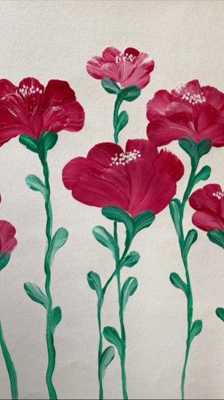

Huisjes
 Rijtjeshuis met een gezellige tuin.
Rijtjeshuis met een gezellige tuin.
Vaas
paarse vaas voor een kleurrijk interieur.
Delphinium
 Elegante Delphinium met levendige bloemen.
Elegante Delphinium met levendige bloemen.
Kamperen
Avontuurlijk kamperen met prachtige natuur om je heen.
Tulp
 Een kleurrijke tulp in volle bloei.
Een kleurrijke tulp in volle bloei.
Zonsondergang
 Een betoverende zonsondergang.
Een betoverende zonsondergang.
Plant
 Een diverse verzameling prachtige planten.
Een diverse verzameling prachtige planten.
Anemoon
 Prachtige anemoon met zachte oranje bloemblaadjes.
Prachtige anemoon met zachte oranje bloemblaadjes.
Rambler
 Prachtige rambler (klimroos) met overvloedige bloemen.
Prachtige rambler (klimroos) met overvloedige bloemen.
Klaproos

Een sierlijke klaproos.